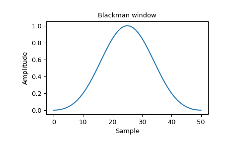
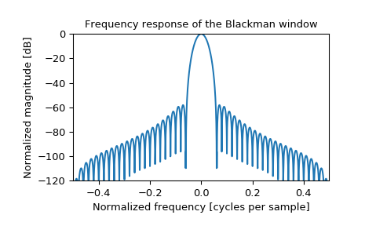

scipy.signal.windows.blackman¶
-
scipy.signal.windows.blackman(M, sym=True)[source]¶ Return a Blackman window.
The Blackman window is a taper formed by using the first three terms of a summation of cosines. It was designed to have close to the minimal leakage possible. It is close to optimal, only slightly worse than a Kaiser window.
- Parameters
- Mint
Number of points in the output window. If zero or less, an empty array is returned.
- symbool, optional
When True (default), generates a symmetric window, for use in filter design. When False, generates a periodic window, for use in spectral analysis.
- Returns
- wndarray
The window, with the maximum value normalized to 1 (though the value 1 does not appear if M is even and sym is True).
Notes
The Blackman window is defined as
\[w(n) = 0.42 - 0.5 \cos(2\pi n/M) + 0.08 \cos(4\pi n/M)\]The “exact Blackman” window was designed to null out the third and fourth sidelobes, but has discontinuities at the boundaries, resulting in a 6 dB/oct fall-off. This window is an approximation of the “exact” window, which does not null the sidelobes as well, but is smooth at the edges, improving the fall-off rate to 18 dB/oct. [3]
Most references to the Blackman window come from the signal processing literature, where it is used as one of many windowing functions for smoothing values. It is also known as an apodization (which means “removing the foot”, i.e. smoothing discontinuities at the beginning and end of the sampled signal) or tapering function. It is known as a “near optimal” tapering function, almost as good (by some measures) as the Kaiser window.
References
- 1
Blackman, R.B. and Tukey, J.W., (1958) The measurement of power spectra, Dover Publications, New York.
- 2
Oppenheim, A.V., and R.W. Schafer. Discrete-Time Signal Processing. Upper Saddle River, NJ: Prentice-Hall, 1999, pp. 468-471.
- 3
Harris, Fredric J. (Jan 1978). “On the use of Windows for Harmonic Analysis with the Discrete Fourier Transform”. Proceedings of the IEEE 66 (1): 51-83. DOI:10.1109/PROC.1978.10837.
Examples
Plot the window and its frequency response:
>>> from scipy import signal >>> from scipy.fft import fft, fftshift >>> import matplotlib.pyplot as plt
>>> window = signal.blackman(51) >>> plt.plot(window) >>> plt.title("Blackman window") >>> plt.ylabel("Amplitude") >>> plt.xlabel("Sample")
>>> plt.figure() >>> A = fft(window, 2048) / (len(window)/2.0) >>> freq = np.linspace(-0.5, 0.5, len(A)) >>> response = np.abs(fftshift(A / abs(A).max())) >>> response = 20 * np.log10(np.maximum(response, 1e-10)) >>> plt.plot(freq, response) >>> plt.axis([-0.5, 0.5, -120, 0]) >>> plt.title("Frequency response of the Blackman window") >>> plt.ylabel("Normalized magnitude [dB]") >>> plt.xlabel("Normalized frequency [cycles per sample]")
